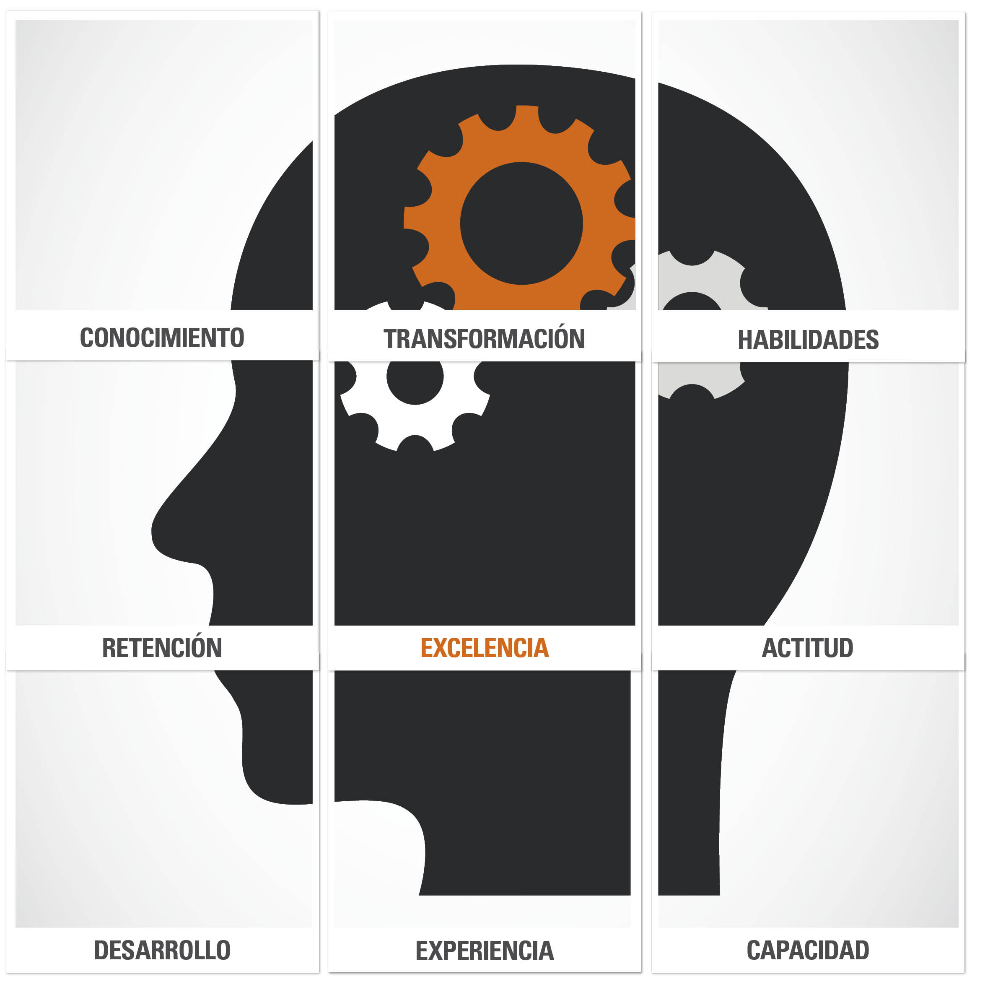

Los factores humanos constituyen las características físicas, psicológicas y sociales que afectan la interacción humana con los equipos, sistemas, procesos, otras personas y equipos de trabajo.
Apuntes: Son las personas que tienen relación con la empresa desde los diversos ámbitos de su funcionamiento y su conexión con la sociedad. Trabajadores, empresarios, propietarios, usuarios y clientes.
